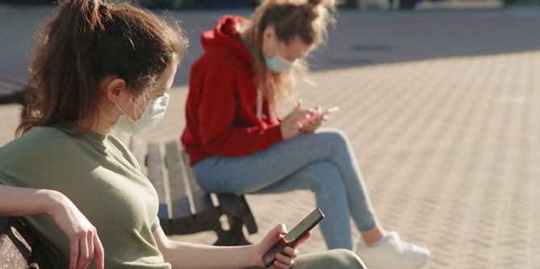
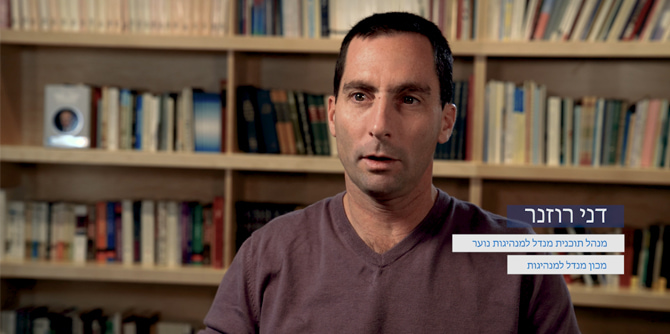

The coronavirus pandemic, which has caused a global health and economic crisis, reached Israel in early February 2020. This almost metaphysical event upended life as we knew it. Health systems around the world buckled under the strain, there have been deaths and hospitalizations in the thousands and millions, and lockdowns and quarantines have kept people at home for months on end. In Israel, more than a million people lost their jobs and the economy stalled. Life everywhere has been characterized by enormous uncertainty and fear with regard to every area of life. This has been a unique crisis, very different from anything we have encountered before.
From the moment that the Israeli government began imposing restrictions on civilian movement and activity, through the point at which a full lockdown was imposed, all public systems in the country were forced to reorganize themselves in a very short period of time and had to find new and creative ways to remain relevant, productive, and meaningful.
Because the education system shut down completely, including non-formal education settings, Israel’s children and youth were consigned to educational and social isolation. They found themselves at home, with their families, lacking any significant external educational activity, removed from their friends and from other meaningful adult figures who could support them.
Quickly, and with great initiative and creativity, non-formal education professionals found ways to develop and maintain meaningful ongoing connections with young people, both those affiliated with their organizations and those who were not.

Under the auspices of the Mandel Leadership Institute, the Mandel Youth Leadership Program decided to study this phenomenon as it was occurring. It documented a moment at which a new form of pedagogy was emerging, at which – against all odds – exciting new educational initiatives were being created; a moment at which identity, commitment, and longing for connection overcame the barriers of isolation and distance, and continued to drive the wheels of education.
The findings of this review were published in a report that is not an academic study; rather, it is a form of documentation, an attempt to capture the moment, to listen to many voices, and to produce a single, up-to-the-minute description of what happened in non-formal education during the first lockdown in Israel in real time.
The review was thus written as the events transpired. Its goal was to map and catalogue responses in non-formal education using online tools, in conditions of considerable uncertainty, and involving rapid appraisal in real time of activities being carried out in the field. It surveys the character and scale of these activities, their effectiveness, the lessons learned from them, and the infrastructure they require, and includes thoughts about the future.
The survey is intended to provide a basis for future implementation during crises, and thus to serve as a useful tool for education institutions, offer basic premises for future research into new methods, pedagogies, and approaches to educational practice, and provide an examination of the effects and outcomes of this strange and unique period of forced social isolation.
The review was initiated by
Yael Hess, director of the Mandel Leadership Institute, and
Miki Nevo, then the director of the Mandel Youth Leadership Program and today the director of the Mandel Center for Leadership in the North. It was conducted by
Dani Rozner, who was then a researcher for the Mandel Youth Leadership Program and has subsequently been appointed its director, with the help of
Elah Avital and with academic support and statistical analysis by
Dr. Ronit Amit.
To read the full Hebrew report, click
here >>
Dani Rozner, director of the Mandel Youth Leadership Program and author of the report
{kind=link}
{kind=link}